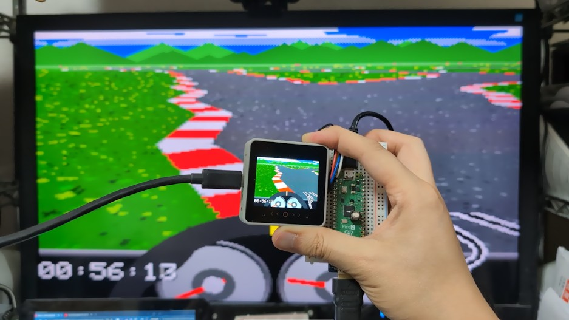
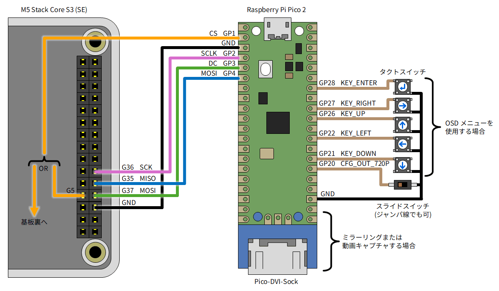
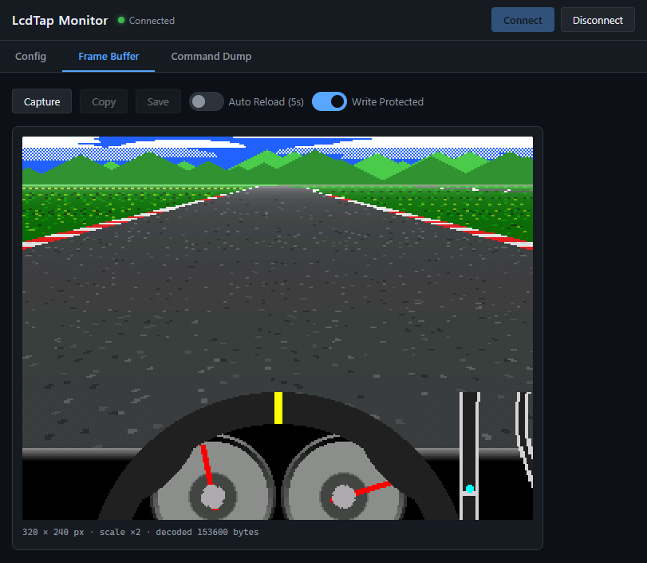

LcdTap: M5Stack CoreS3 の画面をミラーリング/キャプチャする
「LcdTap」を使用して M5Stack CoreS3 の画面をモニターにミラーリングしたり、キャプチャする方法を紹介します。

LcdTap
LcdTap は、Raspberry Pi Pico2 を使って、I2C 接続や SPI 接続の LCD モジュールの表示内容を DVI で出力して大きなディスプレイにミラー表示したりキャプチャしたりできるライブラリです。
用意する物
- M5Stack CoreS3 (SE)
- Raspberry Pi Pico 2 (ピンヘッダ付き)
- USB ケーブル (TypeA-MicroB)
-
モニターへのミラーリングや動画キャプチャを行う場合
- Pico-DVI-Sock
- HDMI ケーブル
- 640x480@60Hz または 1280x720@30Hz の DVI-D 信号を入力可能なディスプレイ
-
設定に OSD メニューを使用する場合
- タクトスイッチ x5
-
CoreS3 を改造して CS 信号を取り出す場合:
- 六角ドライバー
- 導線 (ビーニル線等)
-
480p / 720p 切り替え式にする場合:
- スライドスイッチ、DIP スイッチ等
CS 信号の引き出し
LcdTap は SPI バスの信号を見て画面の内容を再構築します。 SPI バスのうち SCLK、MOSI、DC は CoreS3 の M-Bus コネクタから引き出すことができますが、 CS 信号は基板上にしか無いので、どうにかして引き出す必要があります。
方法1: M5GFX の改造 (ハンダ付け不要・再コンパイル必要)
M5GFX ライブラリに手を加えてディスプレイモジュールに繋がっている CS 信号と同じものを M-Bus コネクタの GPIO 端子に出すことができます。
Windows + Arduino IDE の場合、ソースコードは D:\Users\(ユーザ名)\Documents\Arduino\libraries\M5GFX\src\M5GFX.cpp にあります。
念のため M5GFX.cpp のバックアップを取った上で、cs_control 関数に以下の変更を加えてください。
void cs_control(bool flg) override
{
lgfx::Panel_ILI9342::cs_control(flg);
+ // GPIO5 を CS ピンに連動させる
+ lgfx::pinMode(GPIO_NUM_5, lgfx::pin_mode_t::output);
+ if (flg) {
+ lgfx::gpio_hi(GPIO_NUM_5);
+ } else {
+ lgfx::gpio_lo(GPIO_NUM_5);
+ }
// CS操作時にGPIO35の役割を切り替える (MISO or D/C);
// FSPIQ_IN_IDX==FSPI MISO / SIG_GPIO_OUT_IDX==GPIO OUT
// *(volatile uint32_t*)GPIO_FUNC35_OUT_SEL_CFG_REG = flg ? FSPIQ_OUT_IDX : SIG_GPIO_OUT_IDX;
// CS HIGHの場合はGPIO出力を無効化し、MISO入力として機能させる。
// CS LOW の場合はGPIO出力を有効化し、D/Cとして機能させる。
*(volatile uint32_t*)( flg
? GPIO_ENABLE1_W1TC_REG
: GPIO_ENABLE1_W1TS_REG
) = 1u << (GPIO_NUM_35 & 31);
}
方法2: CoreS3 の基板から直接 CS 信号を引き出す (ハンダ付け必要・再コンパイル不要)
今回引き出す信号はディスプレイの制御信号であり、CoreS3 の無線通信機能には何ら影響を与えませんが、 電波法上はこの状態で Wi-Fi や Bluetooth を使用することは厳密には違法と見なされる可能性があります。 この方法は無線機能を使用しないアプリケーションに限定することをお勧めします。
-
CoreS3 の背面のスピーカーを取り外し、スピーカーがあったスペースへ向かって基板をスライドさせて持ち上げると、基板を外すことができます。
- 基板とディスプレイモジュールがフレキシブルケーブルで繋がっているので、傷つけないようにご注意ください。
-
M-Bus コネクタの近くに CS 信号をプルアップしている抵抗があるので、そこに導線をハンダ付けします。ブラブラしないように接着剤等で固定することをお勧めします。

- 導線を基板と筐体の隙間から外へ引き出します。
CoreS3 と Pico2 の接続
図のように接続してください。CoreS3 ではディスプレイ制御時は MISO が DC として使用されますので、CoreS3 の MISO を Pico2 の DC に接続します。
- ミラーリングや動画キャプチャを行う場合は Pico-DVI-Sock をハンダ付けします。
- CS ピンは M5GFX を改造した場合は GPIO5 に、基板から引き出した場合はそれを接続します。
- OSD メニューを使用して設定を行う場合は Pico2 の GPIO21～28 にタクトスイッチを接続します。
- 480p@60Hz / 720p@30Hz 切り替え式にする場合は GPIO20 に DIP スイッチやスライドスイッチを接続します (接続しない場合は 480p@60Hz になります)。

Pico2 へのファームウェアの書き込み
- LcdTap のリリースページ から zip ファイルをダウンロードし、展開して
lcdtap_pico2_universal.uf2を取り出します。 - Pico2 の BOOTSEL ボタンを押しながら USB ケーブルで PC に接続します (マスストレージデバイスとして認識されます)。
- マスストレージデバイスに
lcdtap_pico2_universal.uf2をコピーします。
書き込みが成功すると、Pico2 の LCD が点滅します。
設定
CoreS3 の電源を入れる前に設定を行って下さい。設定は Pico2 のオンボード Flash ROM に保存されるので、初回だけで OK です。
ブラウザを使用する場合 (PC 必要、タクトスイッチ不要)
- ファームウェアを書き込んだ Pico2 を PC に接続します (シリアルポートとして認識されます)。
- Web Serial API に対応したブラウザ (Chrome、Edge、Firefox 等) で LcdTap Monitor にアクセスします。
- Connect ボタンを押してシリアルポートを選択します。
-
Config タブで以下のように設定します。
Parameter Value Controller Type ST7789 Interface Type 4-Line SPI LCD Width 320 px LCD Height 240 px Inverted On Swap R/B On Output Rotation 0 deg Force Power On Off - Apply を押します。
OSD メニューを使用する場合 (PC 不要、タクトスイッチ必要)
- Pico2 を USB ケーブルで充電器や PC に接続します。
- Pico-DVI-Sock とモニターを HDMI ケーブルで接続します。
-
Enter キーを押すと OSD メニューが表示されるので、左右上下キーを使って以下のように設定してください。
Parameter Value Interface 4Line SPI Controller Type ST7789 LCD Width 320 px LCD Height 240 px Inversion On Swap Red/Blue On Output Rotation 0 deg Force Power On Off - Apply を選択して Enter キーを押します。
モニターへのミラーリングや動画キャプチャ
セットアップ完了後、CoreS3 の電源を入れると CoreS3 の画面がモニターに表示されます。 DVI-D 入力に対応した HDMI キャプチャを使用して録画することもできます。
ブラウザからの静止画キャプチャ
LcdTap Monitor の Frame Buffer タブで Capture ボタンを押すことで、 フレームバッファの内容を読み出すことができます。 画像が崩れる場合は「Write Protected」スイッチを切り替えてみてください。

関連リンク
-
SNS 投稿